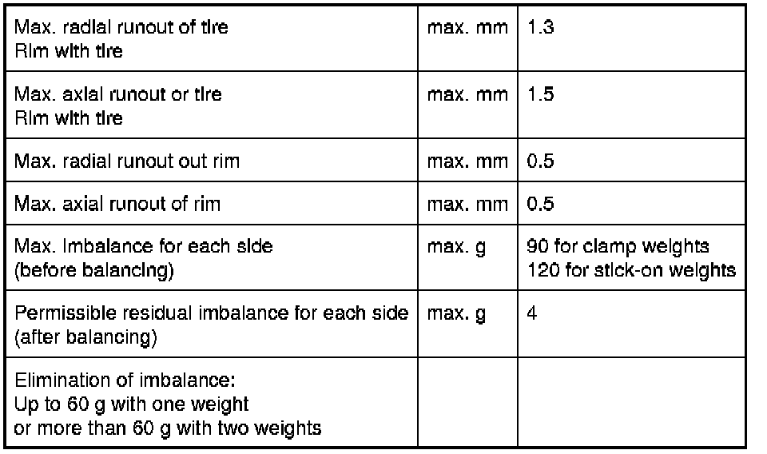

Operation CHARM
: Car repair manuals for everyone.
Home
>>
BMW
>>
2007
>>
X3 3.0si (E83) L6-3.0L (N52K)
>>
Repair and Diagnosis
>>
Maintenance
>>
Wheels and Tires
>>
Wheels
>>
Specifications
>>
Technical Data
>>
Wheels Two-Part Alloy Wheels
Wheels Two-Part Alloy Wheels
36 10
Wheels
Two-part alloy wheels
